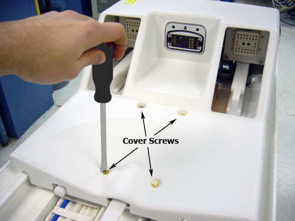

Operating Documentation
Direction 5670000, Rev# 1
Optima MR450w 1.5T Service Methods
Module Version 3.0, Version Date 8/19/08
Operating Documentation |
| Required Persons | Preliminary Reqs | Procedure | Finalization |
|---|---|---|---|
| 1 | 15 minutes |
The LPCA mechanism allows the cradle to be released from the LPCA by twisting the handle located at the rear of the patient cradle. The threaded actuator on the LPCA must be adjusted properly so that the LPCA latch hook engages cradle sufficiently, yet allows hook to be raised to release cradle.
| Item | Qty | Effectivity | Part# | Manufacturer | |
|---|---|---|---|---|---|
| Non-ferrous Medium Slotted Screwdriver | 1 | - | - | - | |
Unlatch LPCA from cradle and drive LPCA to rear of magnet.
Remove LPCA cover by unscrewing four top screws.
Illustration 1: LPCA Cover Screws

Dock patient transport, if necessary.
Latch LPCA to cradle.
Ensure that the LPCA meets the following criteria:
LPCA latch hook must be low enough to positively engage cradle.
LPCA latch hook must be high enough to be disengaged from cradle when cradle handle is twisted. Verify that the LPCA can be moved into the bore without moving the cradle.
If adjustment is needed, see Section 3 in the Cradle Release Block Adjustment procedure.
Replace LPCA cover.
No finalization steps.